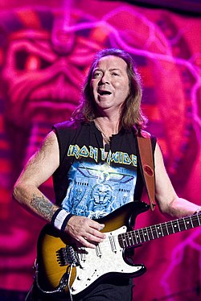

Instrumentos
Os instrumentos
Quando falos em rock, temos tres intrumentos fundamentais que são: Guitarra,contra-baixo,bateria. Aqui vamos mostra esse instrumentos nos 3 principais tipos de rocks mais escutados no mundo:
Contra Baixo
Quando o assunto e rock o contrabaixo e um dos intrumentos mais importantes.
Contra baixo no rock progressivo
Com ele podemos ter aquele som mais relaxante, no caso do rock progressivo ou alternatico. Podemos ver esse belo instrumento atuando com sua perfeição, na música Money do Pink Floyd, que um rock alternativo, vemos abaixo: Do mestre Roger water
Gostaram do som desse lindo instrumento? ;)
Contrabaixo no rock metal
O contrabaixo no rock metal não temos aquele grave gostozinho de se ouvir como no rock progressivo, mas temos um toque mais "fino", que quando trabalha com guitarra fica uma coisa de encher os olhes de lagrimas:
Um dos baixistas mais famosos no mundo do metal é o Steve Harris, da banda Iron Maiden, olha uma fotinha dele :)
Caso não acredite que esse som e do contra baixo de uma olhada nesse video no youtube video do carinha espetacular.
No rock classico
No rock classico o contra baixo tem um som mais de dançante, temos aquele grave que faz toda a diferença podemos ver isso na música "Dont let me down" dos The Beatles:
Imagens do Paul McCartey
Guitarra
Guitarra no rock progressivo
A guitarra assim como o baixo no rock progressivo tem um som marcante que não é tão lento, mas também não tão rápido e uma coisa agradável aos ouvidos. Podemos ver isso com o seguinte solo tirado do canal, onde ele reproduz o solo do David Gilmour. essa música se chama Another Brick in the wall, vale lembra que uma das música mais famosas da banda.
Guitarra no rock metal
A guitarra no rock metal é mais agitada, como se tivesse vida própria e tem um som magnífico que não consegue deixar a cabeça no lugar. Podemos ver isso na música "The Trooper" da banda Iron Maiden, que o começo é de arrepiar.
Aqui podemos ver o moço que fezer essa obra de arte. O nome dele é Dave Murray.
No rock classico
A guitarra tem um som mais suave, que ajuda a relaxar, diferente dos outros tipos, ela tem o toque mais suave e o mais encantador, como podemos ver a seguir no solo da música "Let it Be" dos The Beatles. Logo a baixo vemos uma fotinha do John Lennon criador dessa linda composição. :)
Você pode ver moço tocando clicado aqui.
Bateria no rock progressivo
Assim como nos outros instrumentos do rock progressivo listados a cima, a bateria não foge muito do modo que ela atua, também com um toque mais suave, mas nem tanto. Podemos até dizer que esse tipo de rock é mais fácil de aprender a tocar, para quem está iniciando, pois não contém rítimo muito acelerado, assim como os outros, isso vale para qualquer instrumento listado aqui. ;)
Vamos ver escutar como e esse lindo instrumento em ação.Esse que vamos escutar e um cover da música
Comfortably Numb do Pink Floyd, esse cover foi tirado da aqui. A o mais importante
o baterista que tocou a música pela primeira vez foi o Nick Mason, que era da banda do Pink Floyd, esse moço aqui:
Bateria no Heavy metal
A bateria no Heavy metal é como os outros instrumentos, precisa ter um habilidade para toca-lá, para não se perder no meio da música. E um dos caras que tem habilidade para isso é o Nicko McBrain da Banda Iron Maiden, ele é o cara.
Bateria no rock classico
No rock classico a bateria ela tem um som muito marcante talvez ate mais que os outros intrumentos,mas quando ela se "junta"com a Guitarra Sra e Sr, que maquinifico. Também e um stilo fácil para quem está começando agora. Vamos escutar um menino de 8 anos tocando a música "The End" dos The Beatles,esse garotinho manda demais B).
Você pode ver esse menino tocando no clicando AQUI
Esse garoto incrivel, toca igual o Pete Best, primeiro baterista dos the Beatles.Esse moço aqui: